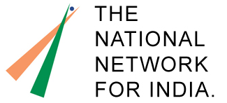

Below are our key partners.
The vision for National Network For India is a vibrant India where the benefits of progress are enjoyed by all citizens, not just a privileged few. NNFI has been instrumental in launching and promoting VoteReport India. NNFI is also our partner in Voice of the Nation and FixOurCity Delhi initiatives.
 Ushahidi is an award-winning platform, started in Kenya, that crowd-sources citizen reporting.
Ushahidi is an award-winning platform, started in Kenya, that crowd-sources citizen reporting.
SwiftRiver is a platform that makes sense of multiple sources of information in a fast-changing situation.
 FrontlineSMS is free software that enables users to send and receive text messages with large groups of people through mobile phones.
FrontlineSMS is free software that enables users to send and receive text messages with large groups of people through mobile phones.
 Alive in Afghanistan is an independent, non-partisan project, formed in response to the huge success of Alive in Baghdad and Alive in Gaza and the result of the hard work and collaboration of many partners and individuals. Alive in Afghanistan empowers Afghan citizens to participate in society by reporting on their political process.
Alive in Afghanistan is an independent, non-partisan project, formed in response to the huge success of Alive in Baghdad and Alive in Gaza and the result of the hard work and collaboration of many partners and individuals. Alive in Afghanistan empowers Afghan citizens to participate in society by reporting on their political process.
 RootSpace is a non-profit organization in Lebanon working to support sustainable knowledge-based development through promoting innovation, social entrepreneurship, media, and ICT for development.
RootSpace is a non-profit organization in Lebanon working to support sustainable knowledge-based development through promoting innovation, social entrepreneurship, media, and ICT for development.